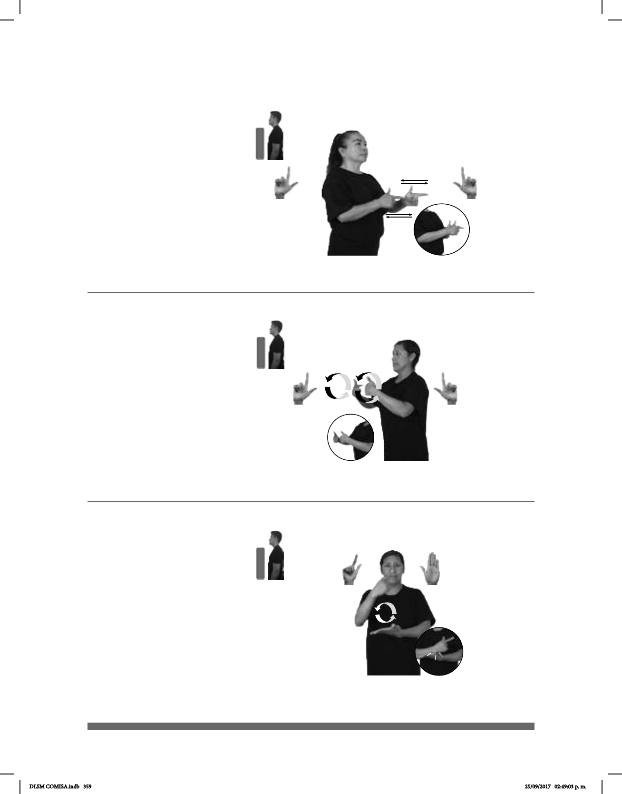

359
(L-57)
Seña: SB
MD y MB L.1
Palmas hacia el
centro.
MD y MB a la altura
del pecho.
MD y MB recto
hacia el frente alternada y repetida-
mente.
sust. Cada una de las
personas o animales nacidos en un
mismo parto y que tienen entre sí
un gran parecido físico.
Seña: SB
MD L.5, MB B-P.2
MD palma hacia
adentro MB palma hacia arriba.
La MD inicia a la
altura de la cara y termina sobre la
muñeca de MB. MB a la altura del
abdomen.
La MD golpea la MB
en línea recta repetidamente.
País ubicado en el
oeste de África cuya capital es
Acra.
Seña: SS
L.1
Palmas hacia adentro.
A la altura del pecho.
Las manos siguen
una trayectoria de movimientos
circulares hacia enfrente.
sust. f. Conjunto de
personas o de elementos de la
misma especie, nacidos o
producidos en el mismo periodo.
(L-56)
(L-55)
pro-YO YA CONOCER pos-SU FAMILIA pro-ÉL TENER GEMELO
AÑO-PASADO pos-MI GENERACIÓN GRADUAR
Mi generación se graduó el año pasado.
ÁFRICA ADENTRO GHANA
Ghana está en África.
DLSM COMISA.indb 359 25/09/2017 02:49:03 p. m.